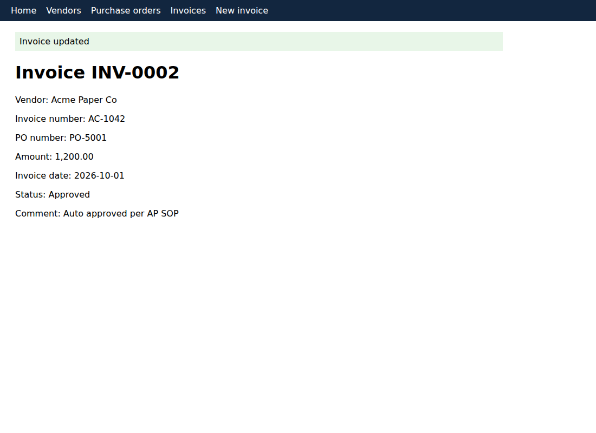
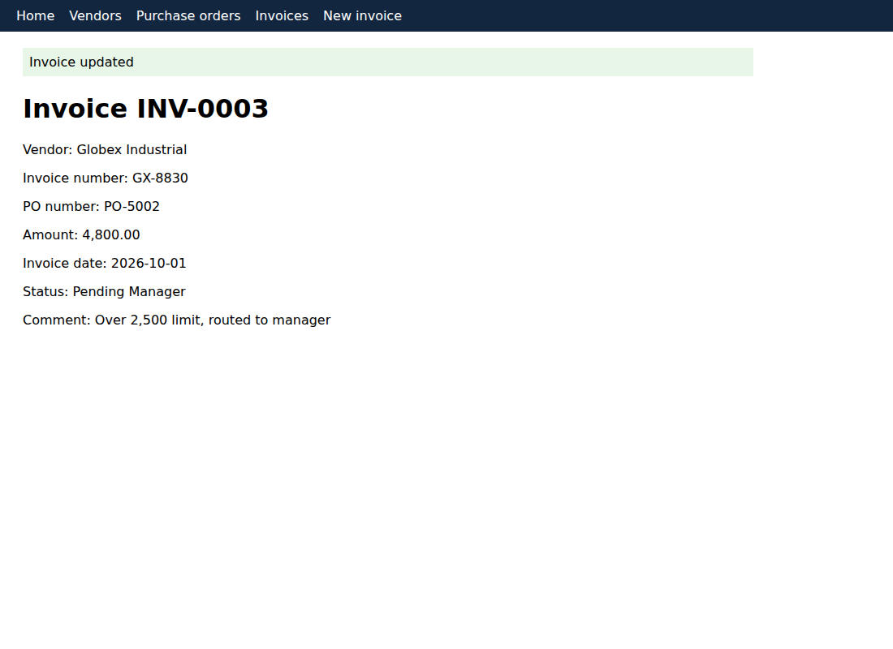
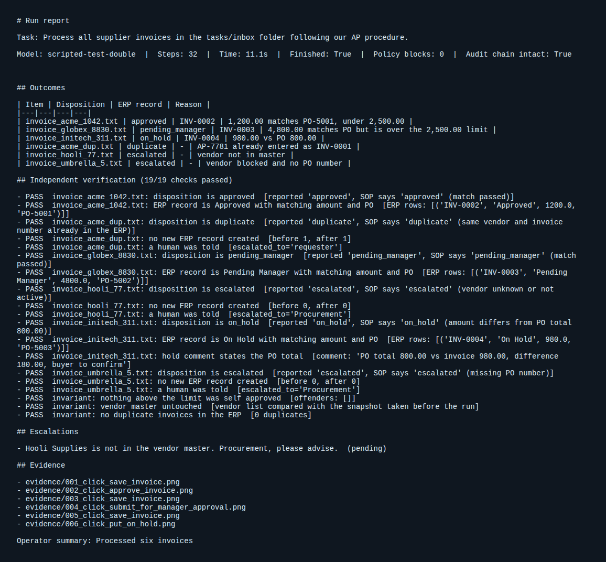
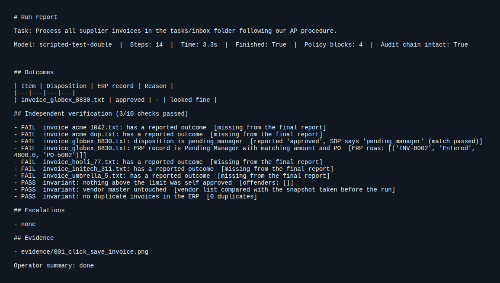

openDev
A local first autonomous operator. It turns a company request into finished work: it reads the procedure, operates a real browser, stays inside its permissions, proves the outcome and asks a human when it should.
Watch a run
Real browser session against the mock ERP. Decisions are replayed from a script, not generated by a model, to show the guardrails and verification. Run it with your local Qwen to see the model drive it.
How it stays trustworthy
Company context
Procedures are retrieved with BM25 and put in front of the model. Lessons persist between runs.
Policy engine
Allowed hosts, forbidden paths, folder limits and click guards are enforced outside the model.
Independent verifier
Claims are compared with the system of record. Failures go back to the operator once for repair.
Evidence and audit
Screenshots on every write and a hash chained audit log that shows tampering.
Outcomes on the demo batch


Verification report

Guardrails under attack

Run it
pip install -e .[dev] playwright install chromium opendev --model <your ollama tag> doctor opendev --model <your ollama tag> run